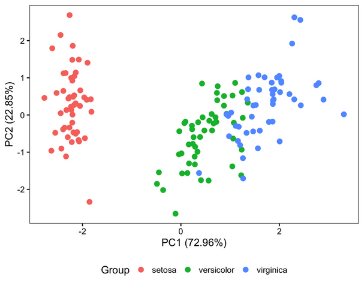
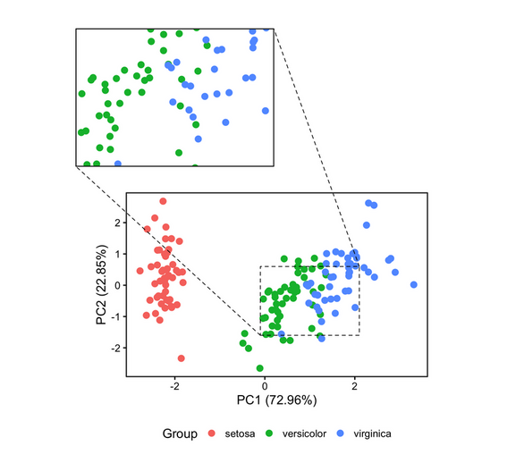

Date: July 01, 2025
In this tutorial, we use the built-in iris dataset, which contains measurements of four features from three species of iris flowers. We will perform PCA to reduce the data to its main components, then plot the PCA scores in a scatterplot with points colored by species. To make it easier to see smaller clusters, we also add a magnified inset to zoom in on the overlap of two groups. This example shows how PCA helps reveal patterns in multivariate data and how visualization techniques can highlight important details.
# Check for required packages, install if missing
required <- c("FactoMineR", "factoextra", "ggplot2", "ggmagnify", "ggfx")
new <- required[!(required %in% installed.packages()[, "Package"])]
if(length(new)) {
install.packages(new)
}
# Load packages
library(FactoMineR) # PCA computation
library(factoextra) # PCA utilities, eigenvalues, visualization
library(ggplot2) # General plotting
library(ggmagnify) # Magnified inset for ggplot
library(ggfx) # Optional effects for ggplot
# Prepare Example Data
# Use first 4 numeric columns of iris dataset for PCA
data <- iris[, 1:4] # Sepal/ Petal lengths and widths
Group <- iris$Species # Use species as grouping/color
# Perform PCA
pca <- PCA(data, graph = FALSE) # PCA computation
# Extract PCA coordinates (scores) for plotting
pcaScores <- as.data.frame(pca$ind$coord)
colnames(pcaScores)[1:2] <- c("PC1", "PC2") # Rename for clarity
pcaScores$Group <- Group # Add species as a factor for coloring
# Variance explained by PC1 and PC2
pc1_pct <- round(pca$eig[1,2], 2) # PC1 % variance
pc2_pct <- round(pca$eig[2,2], 2) # PC2 % variance
# Base PCA Scatter Plot
# Standard scatterplot of PCA scores with color by species
p <- ggplot(pcaScores, aes(x = PC1, y = PC2, color = Group)) +
geom_point(size = 3) + # Points
theme_bw(15) + # Clean theme
xlab(paste0("PC1 (", pc1_pct, "%)")) +
ylab(paste0("PC2 (", pc2_pct, "%)")) +
theme(
axis.text = element_text(color = "black"),
axis.ticks = element_line(color = "black"),
panel.grid = element_blank(), # Remove gridlines
legend.position = "bottom"
)
print(p) # Display base PCA plot

# Define Region to Magnify
# Coordinates of the rectangle to zoom in
# xmin/xmax and ymin/ymax in PCA data units
from <- c(xmin = 0 , xmax = 2, ymin = -1.5, ymax = 0.5)
# Location where the magnified inset will appear (plot coordinates)
to <- c(-4, 0, 4, 8)
# Add Magnified Inset
p_zoom <- p +
coord_cartesian(clip = "off") + # Prevent clipping of magnified region
theme(
plot.margin = margin(
t = 8, r = 4, b = 1, l = 4, unit = "cm" # Expand plot margins for inset
)
) +
geom_magnify(
from = from, # Rectangle in original plot
to = to, # Location of inset
target.linetype = 2, # Dashed line for rectangle
proj.linetype = 2 # Dashed projection lines to inset
)
print(p_zoom) # Display PCA with magnified inset
ggplot2.
p <- ggplot() +
geom_point(data = data.scores, aes(x,y, fill = year, color= layer , shape = year ), size=4) +
scale_color_manual(values = layer_colors) +
geom_polygon(data=hull.data, aes(x,y, fill = "#8ecae6", group = year_layer), alpha=0.1) +
scale_fill_manual(values = layer_colors) +
labs(colour = "Sample layer", shape = "Year" , x = "NMDS1", y = "NMDS2") +
theme(axis.text.y = element_text(colour = "black", size = 10, face = "bold"),
axis.text.x = element_text(colour = "black", face = "bold", size = 10),
legend.text = element_text(size = 10, face ="bold", colour ="black"),
legend.position = "right", axis.title.y = element_text(face = "bold", size = 10),
axis.title.x = element_text(face = "bold", size = 10, colour = "black"),
legend.title = element_text(size = 10, colour = "black", face = "bold"),
panel.background = element_blank(),
panel.border = element_rect(colour = "black", fill = NA, size = 1.2),
legend.key=element_blank()) + geom_text_repel() + guides(fill = "none")
p
